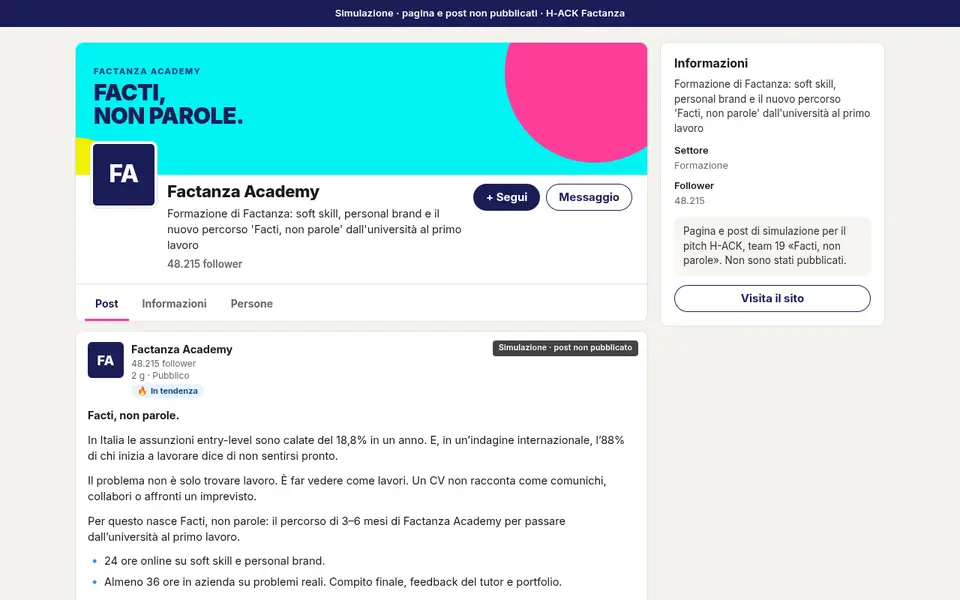
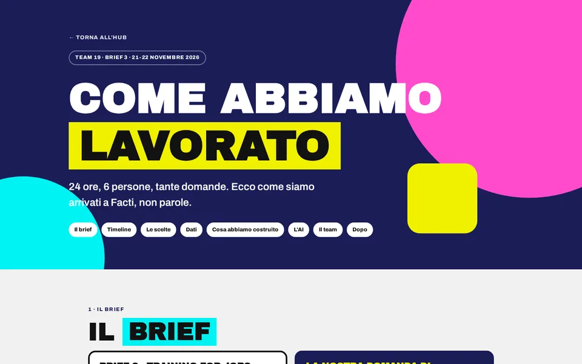

Da provare
I
Tre demo funzionanti, la presentazione e come abbiamo lavorato. Tocca una scheda per aprirla.
Il colloquio d'ingresso
Parli con un avatar AI, anche a voce. Riconosce le tue hard skill. Alla fine scarichi una scheda in PDF. Se li chiedi, ti dà consigli per il colloquio umano.
Apri l'avatar →
Il quiz di teoria
Chiude il corso online, prima della pratica in azienda. 15 domande su casi reali: email, feedback, lavoro in team, obiezioni, priorità, pitch, LinkedIn e portfolio. Dopo ogni risposta spiega perché. Alla fine vedi il risultato per area. Non è la valutazione finale: quella è la prova in presenza con l'azienda.
Apri il quiz →
SimulazioneLa campagna LinkedIn (simulazione)
Due post di lancio: uno per gli studenti, uno per aziende e HR. Pagina e post non sono stati pubblicati.
Apri la campagna →
La presentazione
Le slide del pitch, in inglese: il problema, il percorso, perché Factanza, il modello di business e il pilota. Si apre in PDF e si può scaricare.
Apri la presentazione →
Come abbiamo lavorato
Le nostre 24 ore: il brief, come abbiamo cambiato visione, le scelte, i dati con le fonti, come abbiamo usato l'AI e chi ha fatto cosa.
Apri la pagina →